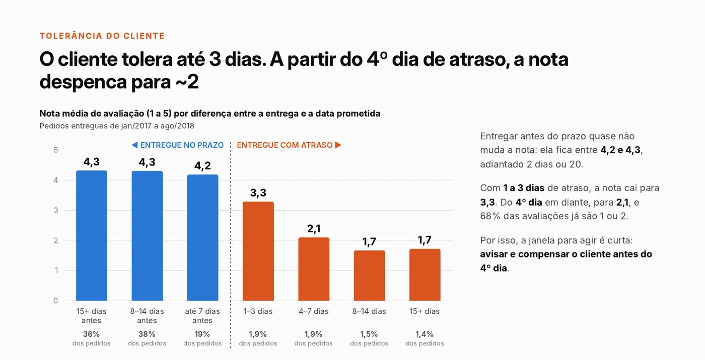
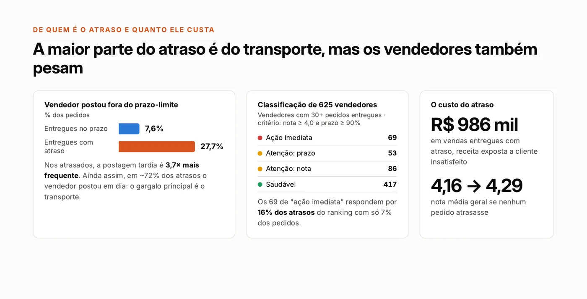

O que eu descobri
1 · Tolerância do cliente
O cliente tolera até 3 dias de atraso
Entregar antes do prazo quase não muda a nota: ela fica entre 4,2 e 4,3. Com até 3 dias de atraso, a nota cai para cerca de 3,3. Do 4º dia em diante, cai para perto de 2. A janela para agir é curta: o cliente precisa ser avisado e compensado antes do 4º dia.

2 · Sazonalidade
Nos picos de demanda, a pontualidade cai e a nota cai junto
Na Black Friday de 2017, a pontualidade caiu para 87,6%. Em março de 2018, chegou ao pior nível do período, 81,0%, e a nota média foi a mais baixa da série. Quando a operação se normalizou, a nota voltou.

3 · Geografia
Nordeste e Rio de Janeiro concentram os piores índices
Seis dos sete piores estados em pontualidade são do Nordeste. O Rio de Janeiro tem quase tantos pedidos atrasados quanto São Paulo com um terço do volume, por isso é a prioridade pelo número absoluto de clientes afetados.

4 · Transporte e vendedores
A maior parte do atraso é do transporte, mas os vendedores também pesam
Nos pedidos atrasados, o vendedor postou fora do prazo 3,7 vezes mais (27,7% contra 7,6%). Classifiquei os 625 vendedores com mais de 30 pedidos, e 69 ficaram em "ação imediata".

O que eu recomendo
SLA de postagem para vendedores
Acompanhar a postagem dentro do prazo e abrir plano de ação com os 69 vendedores classificados como "ação imediata".
Revisar a logística do Nordeste e do RJ
Negociar SLA e transportadora por rota nas regiões com pior pontualidade.
Plano de capacidade para os picos
Preparar a operação para a Black Friday e o 1º trimestre, quando a pontualidade mais cai.
Comunicação antes do 4º dia
Avisar o cliente e oferecer compensação enquanto o atraso ainda é curto.
Calibrar o prazo prometido
A Olist promete cerca de 24 dias e entrega em cerca de 12. Prazos mais realistas por rota podem melhorar a conversão.
Retenção depois da 1ª compra
Cerca de 98% dos clientes compram uma única vez, então a primeira experiência pesa muito.
Como eu fiz
- ETL no Power QueryIntegração das 9 tabelas da base, padronização e agregações. Recorte de jan/2017 a ago/2018 para evitar meses incompletos.
- Modelo estrela no Power PivotUma tabela fato de itens de pedido (112 mil linhas) e 5 dimensões: calendário, cliente, produto, vendedor e geografia.
- 20 KPIs em DAX% no prazo, nota média, % de notas 1 e 2, faturamento em risco, taxa de recompra, variação mensal e acumulado no ano, entre outros.
- Qualidade dos dados17 problemas encontrados, documentados e tratados. Por exemplo, os pagamentos parcelados inflariam o faturamento em 4,5%, e o ID do cliente muda a cada pedido. Os 7 totais de controle do ETL conferem.
- Dashboard e análises no ExcelDashboard executivo com filtros de estado, categoria e período, além de abas de logística, vendedores, clientes e qualidade de dados.